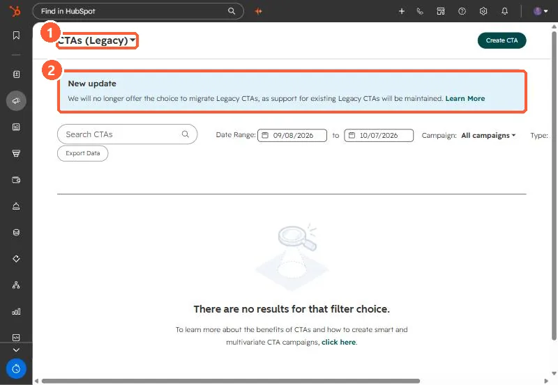

Short answer
Legacy CTAs are under Marketing > CTAs, then the CTAs (Legacy) dropdown. My demo portal shows a notice that HubSpot will no longer offer the choice to migrate legacy CTAs, and that existing ones stay supported. HubSpot's KB says legacy CTAs do not support personalization tokens, and with content staging they stay linked to the original page. The new CTA editor builds buttons, banners and pop-ups.
1. Where they are
Open CTAs and choose CTAs (Legacy) from the dropdown.


2. Limits
- No personalization tokens. Adding one to a button CTA causes an error.
- With content staging, legacy CTAs stay linked to the original page.
- On external sites they need the HubSpot tracking code.
3. What to do
Leave working legacy CTAs alone, since they are supported. Build new ones in the new CTA editor, or use a button module with personalization where you need tokens. Export legacy CTA data with Export Data if you report on them.